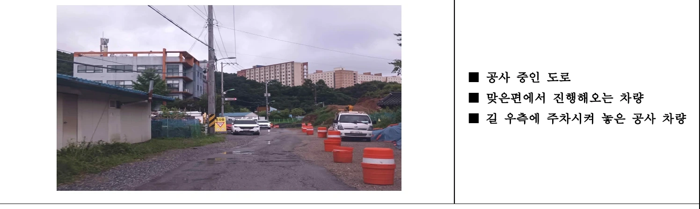

724. 다음 상황에서 가장 안전한 운전방법 2가지는?

- ①도로 공사 중이므로 전방 상황을 잘 주시하며 운전한다.
- ②노면이 고르지 않으므로 속도를 줄이지 않고 빠르게 진행하는 것이 안전하다.
- ③맞은편에서 진행하는 차량에 주의하며 서행한다.
- ④경음기를 계속 사용하며 우측의 주차되어 있는 공사 차량에 경고하고 속도를 높여 신속하게 진행한다.
- ⑤맞은편에서 진행하는 차량이 가까워질 때까지 속도를 유지하다가 급정지한다.
정답 보기
정답
① 도로 공사 중이므로 전방 상황을 잘 주시하며 운전한다.
③ 맞은편에서 진행하는 차량에 주의하며 서행한다.
근거·해설
공사 중인 이면도로에서는 돌발 상황에 대비하여 속도를 줄이고 예측·방어·양보 운전한다.